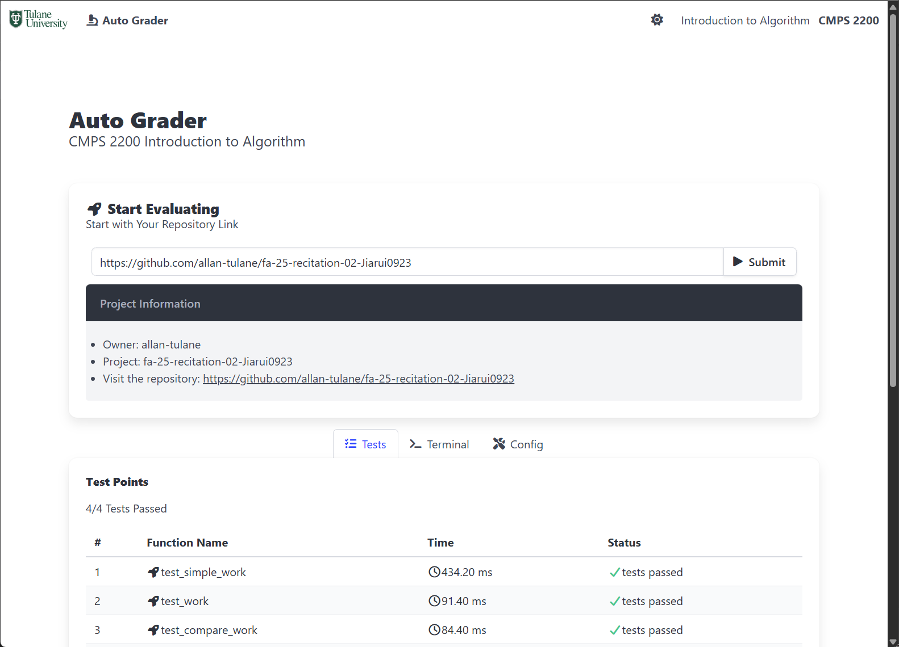

This is an autograder for CMPS2200: Introduction to Algorithms.
It is a single-file, server-free autograder designed for CMPS2200 lab repositories.
The autograder is configuration-free but can be customized for special requirements. It uses PyScript, which allows Python code to run directly in the browser using Pyodide (Python compiled to WebAssembly).
This makes it possible to deploy the autograder as a single HTML page, running the repository code entirely within the user’s browser, no backend or server required.
The autograder is also available online and can be accessed directly at:
👉 CMPS2200 Autograder

Usage Guidelines for Students
This section introduces the main functions, issue reporting, and extended functions of the autograder.
Completing the first section is enough to start using the autograder.
If you encounter an error, please check the Common Issues section first.
If the issue is not resolved, follow the Issue Reporting instructions.
How to Test Your Code
- Go to your repository page and copy the repository link or clone link.
- Repository link format:
https://github.com/{account_name}/{repository_name}/(tree/main/) - Git clone link format:
https://github.com/{account_name}/{repository_name}.git - Make sure your repository is public.
- Repository link format:
- Paste the link in the autograder, then click Submit or press Enter.
- Wait a few seconds — the Test Points panel will display:
- Passed tests
- Failed tests
- Execution time
⚠️ Important: The autograder runs entirely in your own browser.
Your tests and submissions are not visible to your professor or TA.
How to Identify and Report an Issue
If an error occurs:
- Open the Terminal tab and check the error message.
- Look for possible solutions in the Common Issues section.
- If the issue persists, report it by following these steps:
- Go to the Config tab and copy all configuration information into your email.
- Go to the Terminal tab and copy the error message only into your email.
- Include a short description of the issue along with the copied information.
Extended Functions
History
- The History panel shows all your past evaluation records.
- Records are stored locally in your browser.
- Records will be lost if you switch browsers, change computers, or clear browser data.
- You can manually remove all records by clicking Clear.
Theme
- The autograder supports both light and dark themes.
- By default, the theme is set to Auto, following your system preference.
- You can manually switch themes using the theme toggle button in the navigation bar, next to Introduction to Algorithms.
Common Issues
File Not Found
This error may occur for the following reasons:
- Your repository is private — please make it public.
- The repository link is incorrect — double-check the URL.
- Required files are missing — your repository must contain at least:
main.pytest_main.py
- Files are inside an extra folder — make sure they are located in the root directory of your repository.
Package Missing
If you see errors related to missing packages:
- Ensure that a
requirements.txtfile is included in your forked or copied repository.
Customize Configuration
This section is intended for course tutors who want to customize the autograder.
By default, the autograder works as a standalone HTML file (grader.html).
For customization, a config.js file can be provided in the same path.
If config.js is not found, the autograder falls back to its default configuration.
Configure Autograder
The config file consists of three parts:
test_file— the test file for PyTestfiles— the list of files imported by the test filepython_packages— the required Python packages
Test File
1 | const test_file = "test_main.py"; |
- This is the main entry point for PyTest.
- By default, it is
test_main.py. - You can change it if your test file has a different name.
The autograder will automatically scan all functions in this file and execute them, equivalent to:1
pytest {test_file}::{function}
Files
1 | const files = [ |
- This is the list of files imported by
test_main.py. - By default, it includes only
main.py. - Make sure to list all files explicitly — including submodules.
- ✅ Example: include
utils/file.py - ❌ Do not just include
utils/
- ✅ Example: include
Requirements
1 | const python_packages = [ |
- If the repository contains a
requirements.txt, this parameter is ignored. - The autograder will automatically install dependencies from
requirements.txt. - If
requirements.txtis missing, configure the required packages here.
You can specify packages by name, version, or repository path:⚠️ Do not remove1
2
3
4
5const python_packages = [
"pytest",
"{package}=={version}", // with version
"{package}@{repository path}", // with repository link
];pytestfrom this list — it is required.
Deployment
There are multiple ways to run the autograder:
- Local File
Opengrader.htmldirectly in your web browser. - Deploy as a static page
Servegrader.htmlwith a static web server (e.g., NGINX, Apache). - Deploy to GitHub page
- Host
grader.htmlas a GitHub Page or subpage. - Ensure that your GitHub framework does not re-render it.
For example, with Hexo, add the following header at the beginning of grader.html to prevent rendering:1
2layout: false
---
- Host
Cite & Support
If you need further support, customization, or find any bugs, please either:
- Open an issue in this repository, or
- Contact Jiarui Li at jli78@tulane.edu
If you would like to reference this repository, please cite it as:1
2
3
4
5
6@misc{CMPS2200_AutoGrader,
title = {CMPS2200-AutoGrader: An autograder for CMPS2200 Introduction to Algorithms},
howpublished = {\url{https://github.com/Jiarui0923/CMPS2200-AutoGrader}},
year = {2025},
note = {GPL-3.0 License},
}
Acknowledgement
This autograder imported packages via public CDNs:
- PyScript: In-browser Python script interpreting.
1
2<script type="module" src="https://pyscript.net/releases/2025.7.3/core.js"></script>
<link rel="stylesheet" href="https://pyscript.net/releases/2025.7.3/core.css"> - Bulma: CSS framework.
1
<link rel="stylesheet" href="https://cdn.jsdelivr.net/npm/bulma@1.0.4/css/bulma.min.css">
- Font Awsome: CSS icons.
1
<link rel="stylesheet" href="https://cdnjs.cloudflare.com/ajax/libs/font-awesome/7.0.1/css/all.min.css"/>
This post is written by Jiarui Li, licensed under CC BY-NC 4.0.